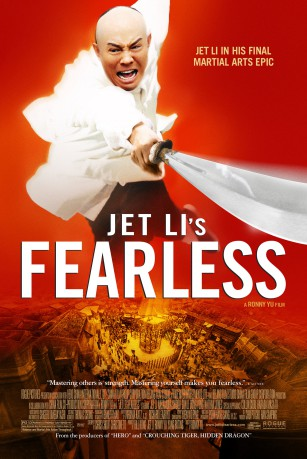

#2553 Fearless
 
 IMDB-Wertung: 7.7 / 10
IMDB-Wertung: 7.7 / 10  Metascore: 70
Metascore: 70 
Fok Yun Gap ist ein Volksheld und ein gefeierter Martial Arts Meister. Der große Erfolg seiner Schule hat Fok zu einer ziemlich arroganten Person gemacht, die seine Künste gerne zur Schau stellt. Dieser Hochmut endet in einem fatalen Duell mit einem Widersacher, dessen Schüler aus Rache Foks Frau und Kind töten.Desillusioniert und als gebrochener Mann herumirrend, findet Fok Unterschlupf auf dem Land bei einer Reisbäuerin, die ihm wieder menschliche Werte einflößt. Als ihn nach seiner Rückkehr in die Zivilisation das chinesische Volk ruft, um das Land bei einem Kampfturnier zu vertreten, lässt sich Fok nicht zweimal bitten...
Jahr: 2006
Dauer: 104 Minuten
FSK: 12
Land: China Studio: Highlight FilmTonspuren: DD5.1 - ,
Untertitel: Deutsch, Englisch,
Auflösung: 720p (1280x532) Größe: 7710 MB
Genre: Action, Drama, Sport, Biographie
Regisseur:  Ronny Yu
Ronny Yu
Drehbuch: Chris Chow, Richard Epcar, Chi-long To
Soundtrack: Shigeru Umebayashi
Darsteller:
 Jet Li als Huo Yuanjia
Jet Li als Huo Yuanjia Collin Chou als Yuanjia's Father
Collin Chou als Yuanjia's Father Hee Ching Paw als Yuanjia's Mother
Hee Ching Paw als Yuanjia's Mother Nathan Jones als Hercules O'Brien
Nathan Jones als Hercules O'Brien Shidô Nakamura als Anno Tanaka
Shidô Nakamura als Anno Tanaka- Brandon Rhea als Belgian Fighter
 Anthony De Longis als Spanish Swordman
Anthony De Longis als Spanish Swordman Jean Claude Leuyer als English Boxer
Jean Claude Leuyer als English Boxer- Jacky Heung als Master Chin's Godson
- Masato Harada als Mita
- Samantha Buck als Journalist
 Mike Leeder als Fight Referee
Mike Leeder als Fight Referee Michelle Yeoh als Miss Yang , uncredited
Michelle Yeoh als Miss Yang , uncredited- Li Sun als Moon
- Yong Dong als Nong Jinsun
- Yun Qu als Grandma
- Ailing Xu als Jade
- Zhi-Hui Chen als Master Chin
- Zhigang Zhao als Zhou's Father
- Jon T. Benn als American Businessman
- John Paisley als English Businessman
- Graeme Ford als English Businessman
- Jun Li als Judge
- Jason C. Lin als Presenter
 Dave Mallow als Nong Jinsun
Dave Mallow als Nong Jinsun- Shiming Zheng als Xia Xiang, intro
- Somrak Khamsing als Muaythai , uncredited
- Ian Powers als Bellboy , uncredited
Datei: X:\HD-Eastern-Classic(A-M)\Fearless (2006, FSK12, 1280x532).mkv seit 22.11.2015
Festplatte: HD Eastern+Western
 Es gibt insgesamt 63 Filme in der Gruppe 'HD-Eastern-Classic(A-M)'
Es gibt insgesamt 63 Filme in der Gruppe 'HD-Eastern-Classic(A-M)'